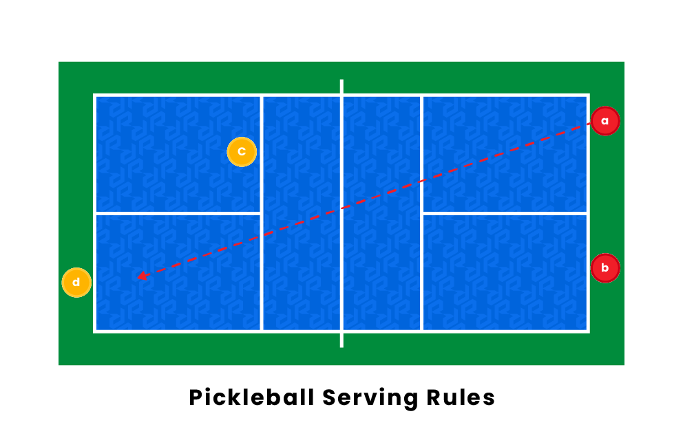
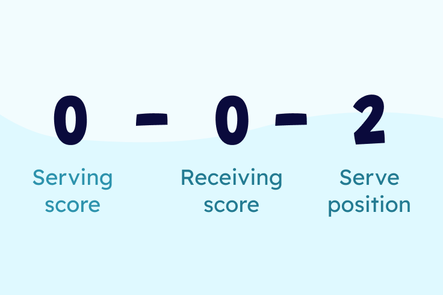
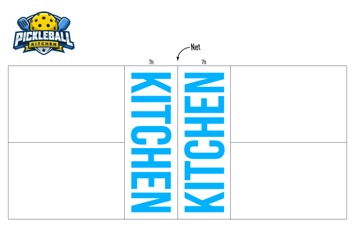
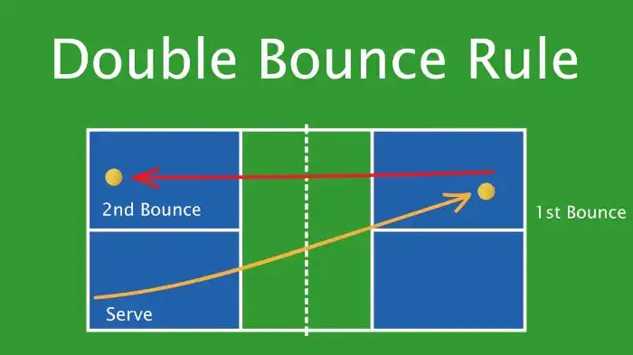

How to Play
Each teammmate is given an oppurtunity to serve each time they are serving, unless it is the first
possesion, then the team only serves once. A Player must serve the ball to the opposite side of the court each time they serve.
If you are on the right side of the court, you serve to the left.
The serve cannot bounce inside the kitchen, if it does it is a turnover and the other teammate serves.
If the serving team scores a point, the server switches spots with their teammate, and now serves to
the opposite side of the court again. Serves must be done underhand below the waist, and putting spin on the ball before you hit it
is illegal. The player who is serving must stand outside of the bound of the court.

Only the team that is serving can score a point. If a team serves the ball, and scores a point, 1 point is added to their score.
Games are played to 11 points (win by two), and the best of 2 out of 3 games are played. Whoever wins more out of 3 games is
considered the winner. Each time a player serves they must say the score out loud, in the format of their score first,
then the opponents score, then which serve they're on. The score will sound something like "5-2-1" meaning that the serving
team is winning 5 to 2 and they are on their 1st serve. Another possible score could be "3-8-2" meaning that the serving team is losing
3 to 8, and they are on their 2nd serve.

Hitting a volley while standing in the kitchen is illegal. If the ball bounces inside the kitchen,
you are allowed to step into it and hit it. You are also not allowed to jump, hit the ball and land inside
the kitchen. Serves can not land in the kitchen, otherwise it is not considered a legal serve.

This only applies if you are playing doubles. It does not matter which side you and your partner start on
as long as you remain there for the entirety of the match. The receiving team does not rotate while the other
team is serving. For the serving team, if a point is scored, the teammates switch spots so now that they are
serving to the other player on the opposing team.
After the first serve, the ball must bounce once before the receiving team can return it.
Then, the serving team must let it bounce once. After the ball has bounced twice, players are free
to hit it out of the air (volley). This rule makes it fair so that the serving team cannot run up
to the kitchen after their teammate serves, and smash it down.
